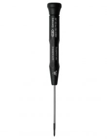
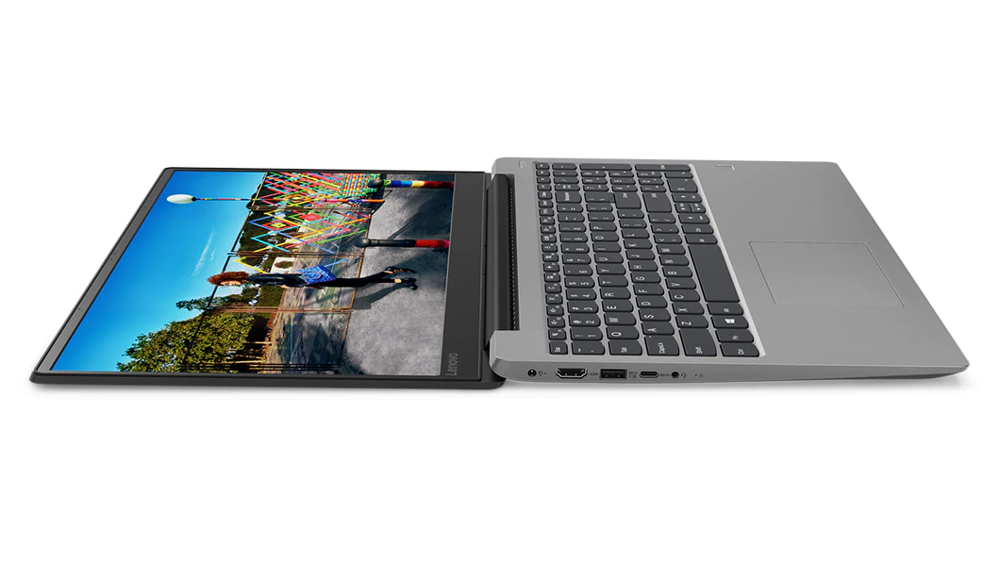

A laptop szerelés lépései:
- Először megbontjuk a műanyag házat
- Viszont mindenek előtt áramtalanítanunk kell, és csak utánna állunk neki a szerelésnek
- Fontos betartani a csavarzási sorrendet
- Ha ez megvan akkor a laptop alján ott vannak a billentyűzetet rögzítő csavarokat, ha nem mozdul egyszerűen a billentyűzet akkor valahol lehet még egy csavar
- Ez legygakrabban a memória, a Wifi kártya, vagy a merevlemez alatt találjuk

A szereléshez szükséges eszközök:
- csavarhúzó
- kártya, vagy gitárpengető

